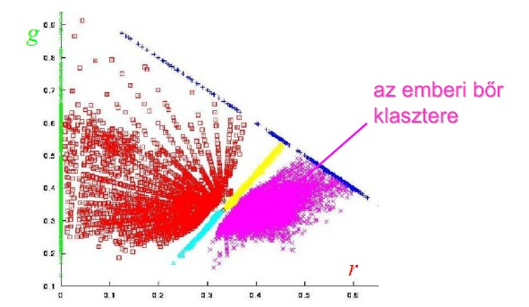

Előfeldolgozás
A kamera paramétereinek beállítása
Színes kép --> szürkeárnyalatos kép konverzió
Gauss szűrés alkalmazása
Küszöbölés
Kéz detektálása
- A kéz pixelek észlelése terület kizárással
- A kéz pixelek észlelése bőrdetektálással



Kurzor mozgatása
Globális minimum y koordinátájú pont megkeresése
Kurzor koordinátáinak beállítása

Ujjmozgás detektálás
Kontúrok és konvex burok keresése
Klikkelések